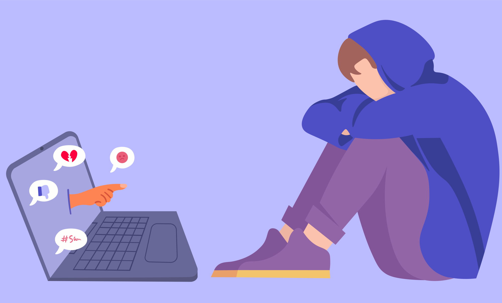

Mental Health

Many people use social media to communicate with others. Social media can take a toll on people unconciously.
However, people are also more vulnerable to cyberbullying on social media. In fact, 42% of individuals using Instagram and 37%
of those on Facebook are likely to be cyberbullied. Snapchat users have a 31% chance of experiencing cyberbullying and a 12% chance
on WhatsApp.
The image and informtation from above is from WebPurify